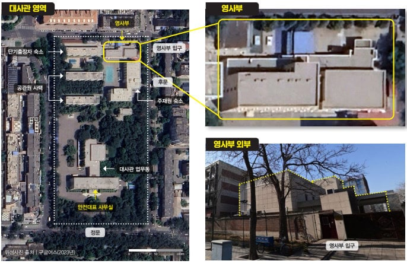

북한 해커 배용주(당시 38세)
한국으로 망명을 시도하다가 중국 당국에 체포돼 6개월간 내몽골에서 취조
이후 중국 측은 북한에 배용주를 넘겼고, 그는 영사부 건물 내 지하감옥으로 옮겨져 1년간 가혹한 취조를 받았다
비밀감옥이 있는 것으로 추정되는 주중 북한대사관 영사부 건물

“못 움직이게 석고로 이런 데(관절) 묶어가지고 석고로 아예 떠 가지고.
발 하고 해서 소리도 못 지르게 하고 움직이지도 못하게 석고로
마치 미라와 같은 형태로 북송
북한에서 사망
출처
https://n.news.naver.com/article/020/0003751308?sid=100
ㅜㅜ